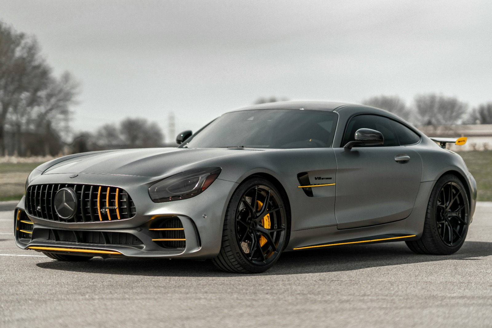
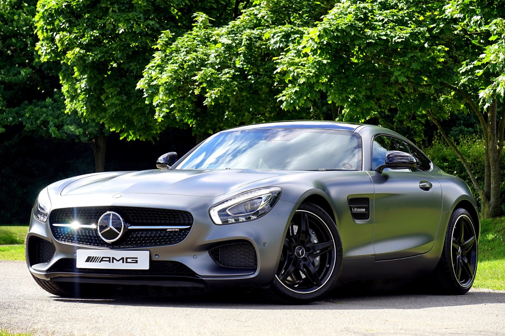
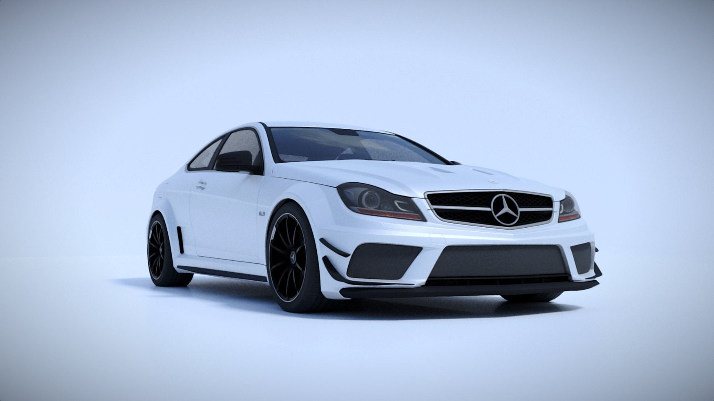
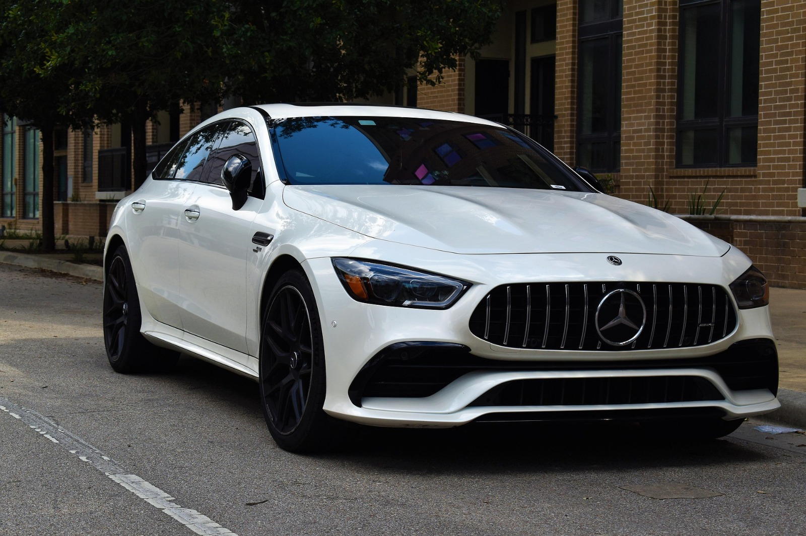
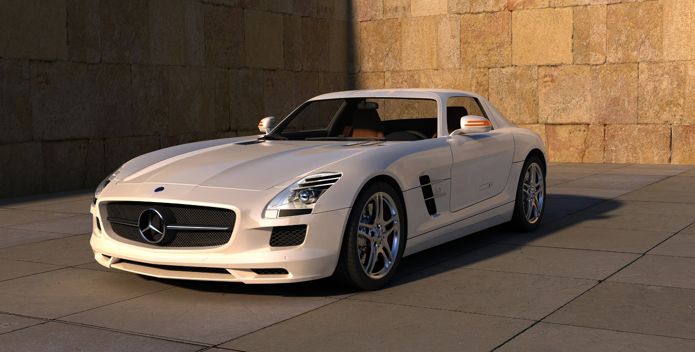

Welcome To The Car details

⭐⭐⭐mercedes car⭐⭐⭐

تقرير عن سيارة مرسيدس AMG GT مقدمة تُعد مرسيدس AMG GT واحدة من أبرز السيارات الرياضية الفاخرة التي تنتجها شركة مرسيدس-بنز، وهي موجهة لعشاق الأداء العالي والتصميم الأنيق. تم تطويرها من قبل قسم AMG المتخصص في السيارات عالية الأداء. التصميم الخارجي تتميز السيارة بتصميم انسيابي يجمع بين الأناقة والقوة، مع واجهة أمامية عريضة وشبك مميز يحمل شعار مرسيدس. الهيكل مصنوع من مواد خفيفة الوزن مثل الألمنيوم لتعزيز الأداء والثبات. كما تأتي بعجلات رياضية كبيرة ومصابيح LED أمامية وخلفية. المحرك والأداء

تظهر في الصورة سيارة مرسيدس-بنز AMG GT ذات الأربعة أبواب، وهي من فئة السيارات الرياضية الفاخرة التي تجمع بين الأداء العالي والراحة. تتميز هذه السيارة بتصميم خارجي أنيق يجمع بين الخطوط الانسيابية والشكل الرياضي الجريء، مع واجهة أمامية مزودة بشبك كبير يحمل شعار مرسيدس الشهير. المواصفات البارزة: المحرك والأداء: تأتي هذه الفئة عادة بمحركات قوية من نوع V8 أو V6 مزودة بشاحن توربيني، مما يمنحها تسارعاً مذهلاً وأداءً رياضياً مميزاً. التصميم الخارجي: اللون الأبيض مع جنوط سوداء كبيرة يمنح السيارة مظهراً عصرياً وفاخراً، بالإضافة إلى المصابيح الأمامية الحادة وتقنيات الإضاءة الحديثة. الداخلية والتقنيات: تحتوي على مقصورة فاخرة مزودة بأحدث أنظمة الترفيه والمعلومات، مع مقاعد مريحة وداعمة للسائق والركاب. السلامة: مزودة بأنظمة أمان متقدمة مثل مساعد الكبح التلقائي، ونظام الحفاظ على المسار، وكاميرات الرؤية المحيطية. هذه السيارة تعتبر خياراً مثالياً لعشاق السرعة والفخامة، حيث توفر تجربة قيادة ممتعة مع مستوى عالٍ من الراحة والتقنيات الحديثة.

تقرير عن سيارة مرسيدس-بنز C63 AMG بلاك سيريز مقدمة تُعد مرسيدس-بنز C63 AMG بلاك سيريز واحدة من أقوى وأندر السيارات التي أنتجتها شركة مرسيدس-AMG. تم تصميمها لتجمع بين الفخامة الألمانية والأداء الرياضي الفائق، وهي موجهة لعشاق السرعة والتجربة الديناميكية على الطرق والحلبات. المحرك والأداء تأتي السيارة بمحرك V8 سعة 6.2 لتر طبيعي التنفس، يولد قوة تصل إلى حوالي 510 حصان وعزم دوران يبلغ 620 نيوتن متر. تتسارع من 0 إلى 100 كم/س في حوالي 4.2 ثانية، وتصل سرعتها القصوى إلى ما يقارب 300 كم/س (محددة إلكترونياً). التصميم الخارجي

تقرير عن سيارة مرسيدس بنز SLS AMG مقدمة تُعد مرسيدس بنز SLS AMG واحدة من أشهر السيارات الرياضية الفاخرة التي أنتجتها شركة مرسيدس بنز بالتعاون مع قسم AMG المتخصص في الأداء العالي. تم الكشف عنها لأول مرة في عام 2009، وهي معروفة بتصميمها المميز وأدائها القوي. التصميم الخارجي تتميز SLS AMG بتصميم أنيق وانسيابي مع خطوط حادة تمنحها مظهراً رياضياً. من أبرز ملامحها الأبواب التي تفتح للأعلى على شكل جناح النورس، وهي سمة أيقونية في هذا الطراز. كما أن الشبك الأمامي الكبير وشعار مرسيدس البارز يضيفان لمسة فخامة. المحرك والأداء